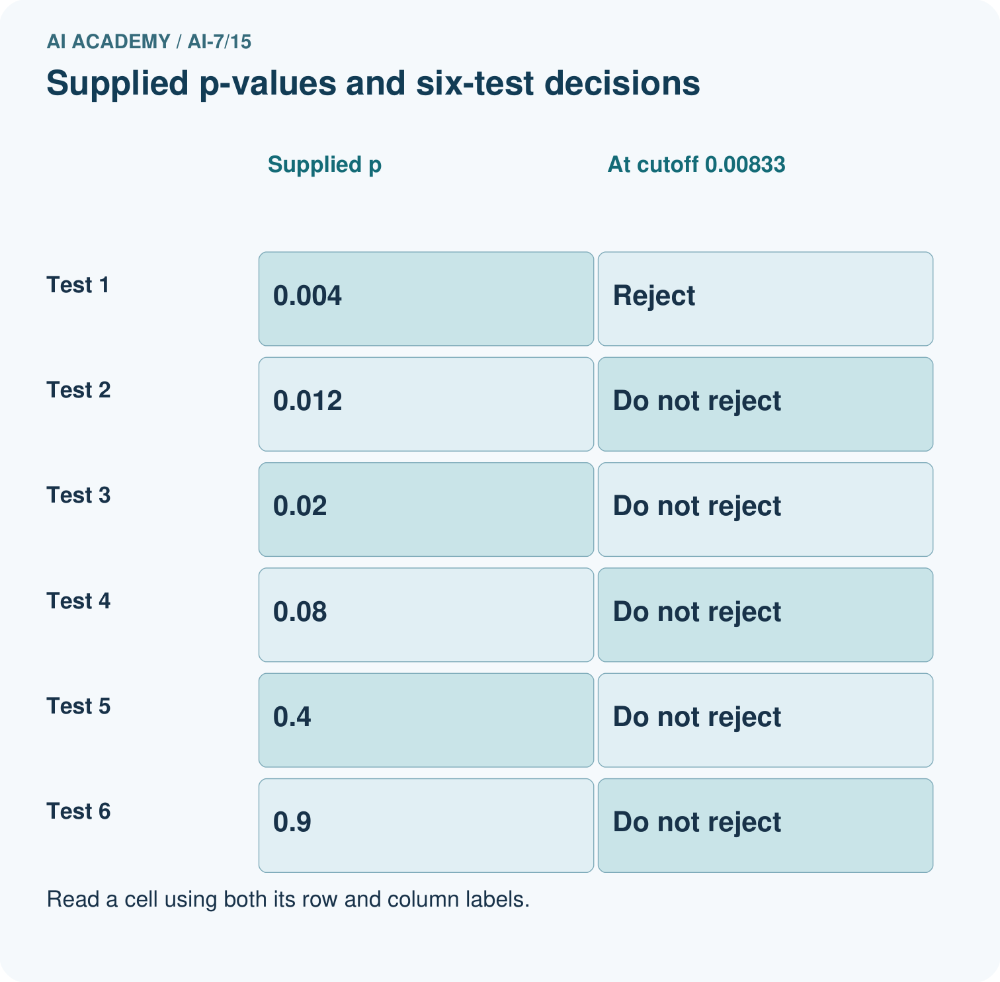
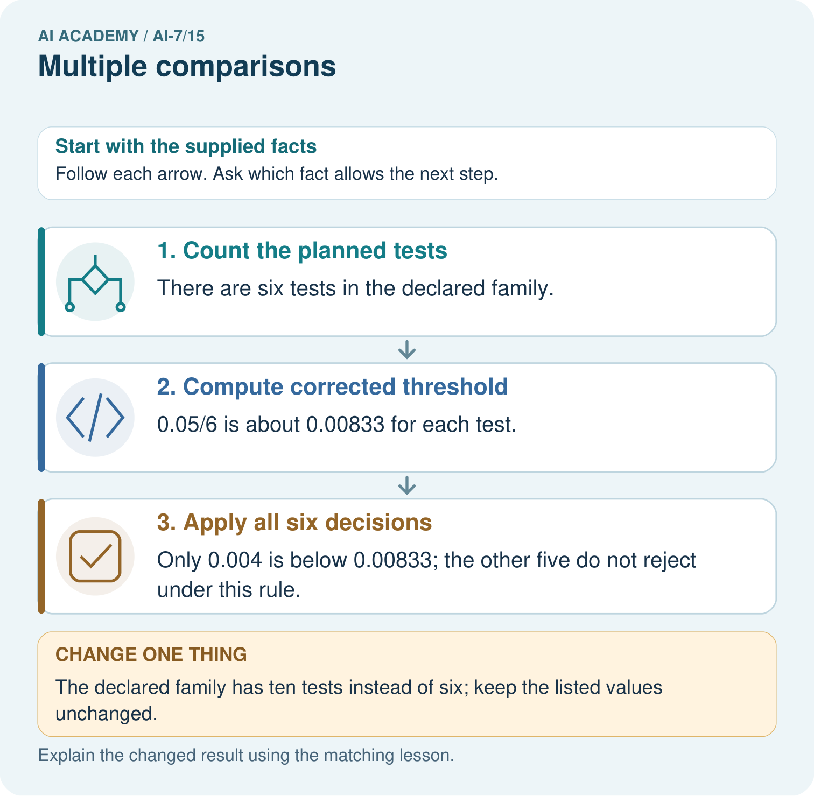

AI Academy · Level 7 · Grade 12 · Week 15 · Teacher guide
Multiple comparisons
Learn to understand, design, build, test and explain AI systems responsibly.
Project: Reproducible AI Research Study
Teacher guide · 1 of 8
Prepare the purpose, prerequisites and materials
Teach the learning cycle
Primary target: Explain the mechanism and terminology of multiple comparisons
| Session | Sequence and minutes | Resources |
|---|---|---|
| Session 1 · Understand · 45 min | 0–7: recall and prerequisite; 7–15: inspect the concrete case and predict; 15–30: teacher models the worked trace; 30–40: learners explain a step using the text and visual; 40–45: check the core idea. | Sections 1–6; record the brief recall in the workbook. |
| Session 2 · Practise · 45 min | 0–5: retrieve the procedure; 5–15: W2 completion practice; 15–23: explain and check with a partner; 23–30: each learner answers the misconception check; 30–40: targeted reteaching or a harder variation; 40–45: prepare the investigation. | Sections 7–10; use the matching workbook W2 and misconception check. |
| Session 3 · Investigate and transfer · 45 min | 0–5: retrieve the decision rule; 5–20: investigate or trace; 20–30: start the independent case; 30–38: connect the project; 38–43: act on feedback; 43–45: plan the return check. | Sections 9 and 11–14. Give extra time to finish the full task set; use Section 15 when the week includes a coding lab. |
This is a starting allocation of 135 minutes, not a validated duration. Preserve all named topics. Schedule extra time for connected examples, the full investigation, independent cases and project building. Repeated copies of a case share one recorded attempt; they are not new evidence.
Retrieval answer guidance
Statistical tests and assumptions
Without opening the old lesson, explain one key idea from Statistical tests and assumptions. Give an example and a mistake that the idea helps you avoid.
Look for: Explain the mechanism and terminology of statistical tests and assumptions
Reference example, not the only acceptable wording: Teacher explanation: A statistical test compares observed evidence with a specified null model. A p-value is not the probability that the null hypothesis is true. Toy paired sign-flip test assumes independent paired differences whose signs are exchangeable under a symmetric zero-effect null. Enumerate all2^n sign assignments, holding magnitudes fixed. Two-sided p is fraction with absolute mean at least the observed absolute mean; use inclusive ties.
Uncertainty intervals
Without opening the old lesson, explain one key idea from Uncertainty intervals. Give an example and a mistake that the idea helps you avoid.
Look for: Explain the mechanism and terminology of uncertainty intervals
Reference example, not the only acceptable wording: Teacher explanation: An uncertainty interval needs a sampling model and assumptions. A confidence level refers to the repeated-sampling method, not a probability attached to a fixed unknown parameter after observing data. For this constructed exercise assume independent normal measurements with known population standard deviation2. A95% mean interval uses supplied normal critical value1.96:mean plus/minus1.96*sigma/sqrt(n). Unknown sigma requires a different justified method.
Experimental units and independence
Without opening the old lesson, explain one key idea from Experimental units and independence. Give an example and a mistake that the idea helps you avoid.
Look for: Explain the mechanism and terminology of experimental units and independence
Reference example, not the only acceptable wording: Teacher explanation: The experimental unit is the independently assigned or sampled entity. Multiple measurements from one unit are often related. If methods are compared within each query, queries are paired units. Repeated runs within a query estimate run variation but do not increase the number of independent query contexts.
Two 45-minute sessions. Testing many hypotheses creates more chances for false discoveries. A family rule must be specified before selecting attractive p-values. Use the supplied constructed scenarios to make the mechanism inspectable. Collect W4 before sharing solutions. Students should name intermediate evidence and limitations; classroom pacing and learning effectiveness remain unvalidated.
Outcomes
Explain the mechanism and terminology of multiple comparisons
Apply the stated procedure to a new case with a traceable result
Identify an assumption or limitation and design a revealing follow-up
Preparation
Lesson and workbook; paper and pencil
Calculator and optional local Python 3 for arithmetic; no live API or private data
Prepare the fresh retry separately and withhold its solution until after collection
Prerequisite answer
A result depends on the inputs, procedure and conditions that produced it. Preserve data roles and distinguish observed outcomes from predictions or unmeasured conditions. If the prior concept cannot be explained, use a short retrieval activity before this chapter.
End goal for the pictorial case
Explain multiple comparisons using the records and boundaries of this fictional investigation.
This added worked case illustrates the week’s main idea. Retain all original and connected topics; schedule its practice within the teaching cycle.
Teacher guide · 2 of 8
Explain and model the mechanism
Testing many hypotheses creates more chances for false discoveries. A family rule must be specified before selecting attractive p-values.
Begin by writing the question the procedure is intended to answer. Identify the information already supplied, the information it will produce and the information still missing. These are constructed classroom examples; they do not require live accounts, private records or an external service. Do not treat a plausible explanation as a measured outcome.
For this exercise use Bonferroni:family alpha .05 divided by number of tests m; reject each test when its valid p-value is at most .05/m. This controls the family error by a bound without requiring independent tests.
Before applying the procedure, write its units, denominator or decision boundary where relevant. A partner should be able to repeat each step using the same inputs. If a required input is absent or violates the stated contract, record that condition explicitly instead of quietly replacing it with a convenient value.
| Term | Meaning |
|---|---|
| Multiple comparisons | Testing several hypotheses in one declared family |
| Family error | The chance of at least one false rejection under relevant nulls |
| Bonferroni rule | Dividing a family threshold by the number of tests |
Multiple comparisons — evidence trace
Guided: Threshold .01; only .009 rejected. An unadjusted .05 rule would also reject .012 and change family control. Qualification: Adjustment cannot repair invalid tests, post-hoc outcome selection or unreported analyses. Exit: accept a concrete variation with its predicted outcome and a stated condition that would challenge the mechanism; reject a claim resting on unmeasured evidence.
Model the reasoning aloud
Use the complete worked example below before asking learners to complete W2. Reveal a small part, invite a prediction, then explain the deciding step. These teacher notes contain solutions; do not reveal the independent case answer during modelling.
Five tests have p-values .009, .012, .3, .4, .8.
Threshold .01; only .009 rejected. An unadjusted .05 rule would also reject .012 and change family control.
Compare the intermediate evidence with the final statement. Explain why each number or decision follows from the stated inputs. The conclusion belongs to this scenario and procedure; changing the inputs, evaluation population or authority can change what it establishes. Retain the raw record so a later revision can be compared honestly.
Optional local lab: predict the printed result before running this standalone Python 3 example. Change one relevant boundary input, record the outcome and state the contract or statistical assumptions. The program uses fictional values and the Python standard library; it performs no external operations.
def bonferroni(p_values, alpha=0.05):
if not p_values or not 0 < alpha < 1 or any((not 0 <= p <= 1 for p in p_values)):
raise ValueError('test settings')
threshold = alpha / len(p_values)
return (threshold, [p <= threshold for p in p_values])
print(bonferroni([.009, .012, .3, .4, .8]))| Thinking move | Teacher prompt |
|---|---|
| Plan | What is given? What is the question? Which procedure fits these facts? |
| Do | Point to each input and intermediate step in the worked trace. Name the rule that allows the next step. |
| Check | Does the output answer the question? Which assumption or limitation prevents a larger claim? |
Use the diagram and verbal explanation together. Ask learners to match a sentence to a specific visual step; do not assign learners fixed visual or auditory learning styles.
A pictorial worked case: Multiple comparisons
Six declared prompt comparisons. A team performs six valid hypothesis tests and applies a predeclared Bonferroni familywise threshold.
The facts we will use
Familywise alpha=0.05. Supplied unadjusted p-values are 0.004,0.012,0.02,0.08,0.4,0.9. These values are stipulated, not calculated from invented data.


Read the picture one step at a time
Why this result follows
Searching many comparisons provides more chances for false positives. Bonferroni divides the error allowance across the declared family; valid individual p-values are required. A rejected null is not automatically a large or useful improvement.
What this example does not establish
No effect size or real data is supplied. Bonferroni can be conservative and cannot repair invalid p-values or undisclosed outcome-driven test selection.
Change one thing in the pictured case
Change: The declared family has ten tests instead of six; keep the listed values unchanged.
Prediction: The cutoff becomes 0.005, and only 0.004 among the listed values still rejects.
Reason: The error allowance is divided among ten tests; all ten results must be reported, including the four not supplied here.
Ask while showing the picture
Cover the result. Ask learners to name the inputs and predict the next step. Uncover one step, connect the icon to the actual procedure, and explain its evidence. Then change the supplied condition and compare. The picture is a representation; it does not document execution of a real AI model.
Teacher guide · 3 of 8
Demonstrate and guide practice
| Time or stage | Teacher action |
|---|---|
| Session 1: 0–7 minutes | Retrieve the prerequisite; identify the input, procedure and evidence source. |
| 7–18 minutes | Explain section 1 and vocabulary. Complete W1 with a mechanism-based explanation. |
| 18–32 minutes | Trace the declared procedure and worked case. Complete W2, recording intermediate steps. |
| 32–45 minutes | Discuss the diagram with the worked input; use W3 to distinguish measured claims and limitations. |
| Session 2: 0–8 minutes | Retrieve the worked reasoning and collect the guided response before discussing it. |
| 8–20 minutes | Compare a proposed boundary variant with the original case; identify what remains fixed. |
| 20–35 minutes | Collect W4 independently. Require the procedure trace and the bounded conclusion. |
| 35–45 minutes | Use W5 and exit responses for feedback. Administer the fresh retry after feedback and preserve both attempts. |
Use the worked example in Sections 3 and 6. Collect a prediction before revealing its result; ask the learner to point to each intermediate fact.
Provide an input/procedure/result/limit frame and a calculator when needed. Ask students to identify the first step before completing the whole trace. Extension: compare two concrete variants of this mechanism while holding unrelated conditions fixed; report both successful and unsuccessful outcomes.
Reduce help deliberately
Completion task: Five tests have p-values .009, .012, .3, .4, .8. Show the intermediate steps and give the conclusion with its scope.
Teacher check: Teacher explanation: Threshold .01; only .009 rejected. An unadjusted .05 rule would also reject .012 and change family control.
Start by identifying the given inputs together. Leave the intermediate steps blank. If needed, model one step, then withdraw that help on the next step. Move to a full trace only when the partial trace is understood. For partners, alternate explainer and checker; collect a response from every learner before discussion.
Individual reasoning check
Use the worked case for Multiple comparisons. Proposed explanation: “The worked result establishes every future case”. Decide whether this explanation is supported. Point to the step or supplied fact that decides; explain your repair if needed.
Expected correction: Adjustment cannot repair invalid tests, post-hoc outcome selection or unreported analyses.
Collect explanations, not only yes/no votes. If a misunderstanding is common, re-model the relevant step for the class. If it affects a few learners, give a short targeted group explanation while others solve a more demanding variation.
Pictorial practice question
Calculate the six-test cutoff and identify which supplied p-values reject. Why must the team count every planned comparison rather than report only its smallest p-value?
Reasoned teacher answer
The cutoff is 0.05/6≈0.00833. Only p=0.004 rejects; the other five exceed the cutoff. Reporting just that result conceals the search and its familywise error control.
Changed-case reasoning: The cutoff becomes 0.005, and only 0.004 among the listed values still rejects. The error allowance is divided among ten tests; all ten results must be reported, including the four not supplied here.
Collect each learner’s explanation before discussion. Use the first missing connection between input, deciding step and result to choose support. This question is worked-case practice, not fresh mastery evidence.
Teacher guide · 4 of 8
Run the investigation and diagnose misconceptions
The worked result establishes every future case: Adjustment cannot repair invalid tests, post-hoc outcome selection or unreported analyses.
A missing input may be replaced without recording the change: A replacement changes the evidence or contract. Record the change and its justification; do not silently turn unknown into a measured value.
Repeating an assessed case is new independent evidence: A replay checks consistency. An example used for feedback or revision cannot later be described as untouched final evaluation.
Use Section 9 for the evidence ledger. Add a boundary or missing-input case and record the expected response before checking. More successful repeats of one case do not establish wider coverage.
Match the support to the first error
| What the response shows | Next teaching action |
|---|---|
| Missing or misread facts | Read the case aloud, mark supplied versus unknown facts, and let the learner restate it. |
| Wrong procedure | Return to the deciding step in the worked case. Contrast it with the proposed incorrect explanation. |
| Arithmetic or implementation error | Trace intermediate values or lines; preserve the first mismatch and retry that step. |
| Correct result without a reason | Ask for a trace and a changed case before marking independent understanding. |
| An unsupported wider claim | Ask which supplied evidence supports the claim and which further observation would be needed. |
Offer an oral explanation, drawing, enlarged visual or fewer examples when that removes a reading/writing barrier. Keep the same reasoning goal. Stretch secure learners by changing a boundary or assumption and asking them to defend the effect, not simply by assigning more of the same questions.
Teacher guide · 5 of 8
Assess and explain the answers
Guided and exit questions
Guided: Threshold .01; only .009 rejected. An unadjusted .05 rule would also reject .012 and change family control. Qualification: Adjustment cannot repair invalid tests, post-hoc outcome selection or unreported analyses. Exit: accept a concrete variation with its predicted outcome and a stated condition that would challenge the mechanism; reject a claim resting on unmeasured evidence.
W1 Explain the mechanism
Explain the weekly mechanism in your own words. Use the worked scenario to name its input, decision rule and output.
Teacher explanation: Testing many hypotheses creates more chances for false discoveries. A family rule must be specified before selecting attractive p-values. For this exercise use Bonferroni:family alpha .05 divided by number of tests m; reject each test when its valid p-value is at most .05/m. This controls the family error by a bound without requiring independent tests.
W2 Trace the worked case
Five tests have p-values .009, .012, .3, .4, .8. Show the intermediate steps and give the conclusion with its scope.
Teacher explanation: Threshold .01; only .009 rejected. An unadjusted .05 rule would also reject .012 and change family control.
W3 Audit the limit
A report omits this qualification: Adjustment cannot repair invalid tests, post-hoc outcome selection or unreported analyses. Explain how omitting it could change a reader's interpretation, and write an accurate replacement.
Teacher explanation: Adjustment cannot repair invalid tests, post-hoc outcome selection or unreported analyses. State the observed result separately from the unverified or out-of-scope claim; preserve the original evidence rather than inventing a missing fact.
W4 Apply a new case independently
Four tests have p-values .01, .02, .2, .9. Compute threshold and decisions.
Teacher explanation: Threshold .0125; reject .01 only. Interpret using the valid-test assumptions, not probability of hypothesis truth.
W5 Design a revealing follow-up
For the worked scenario, propose one additional case that could reveal a failure, describe its expected outcome before running it, and explain what would need to remain fixed for a fair comparison. Do not reuse W4 as a new final test after receiving feedback.
Teacher explanation: Accept a concrete variant of the worked input or a missing/conflicting/boundary condition, with an expectation derived from the declared procedure. Require preserved settings, original outputs and data roles. Adjustment cannot repair invalid tests, post-hoc outcome selection or unreported analyses. The new case should test this particular mechanism rather than merely restate the original result.
Independent assessment and fresh retry
W4: Threshold .0125; reject .01 only. Interpret using the valid-test assumptions, not probability of hypothesis truth. Require intermediate reasoning and the stated scope. Fresh retry: Ten tests have minimum p .006. Expected reasoning: Threshold .005; no rejection if all other values are larger. Do not hide the other nine tests. If students need support, record it and reassess with another new case rather than awarding independence to a copied answer.
Assess independent transfer
Selected case: Four tests have p-values .01, .02, .2, .9. Compute threshold and decisions.
Selected case answer
Teacher explanation: Threshold .0125; reject .01 only. Interpret using the valid-test assumptions, not probability of hypothesis truth.
| Dimension | Evidence required |
|---|---|
| Explanation | Names the applicable idea or procedure and ties it to the supplied facts. |
| Trace and result | Preserves the given inputs and shows the relevant intermediate steps; distinguishes a prediction from an observed execution. |
| Limits | States the assumptions, missing evidence or conditions under which the result would change. |
Record each dimension as not yet, with support, or independent. Accept a valid alternative procedure with a defensible trace. Do not penalise an honestly recorded model failure if the learner correctly explains its evidence and limits.
Feedback that the learner uses
Name the earliest unsupported step and give one action to repair it. Have the learner make that repair now and explain why. Then assess the relevant skill on a fresh, fully specified case. Confirm it was not previously practised with feedback; solve and check the new case before assigning it. A follow-up design prompt is a starting brief, not automatically an equivalent test.
Teacher guide · 6 of 8
Connect the project, support and next lesson
Add a labelled multiple comparisons evidence sheet to Reproducible AI Research Study. Show how you can explain the mechanism and terminology of multiple comparisons. Use the supplied fictional case and keep its inputs, intermediate steps, calculation or prediction, and limitation. Connect this record to last week’s record; a matching answer without a trace is insufficient.
Provide an input/procedure/result/limit frame and a calculator when needed. Ask students to identify the first step before completing the whole trace. Extension: compare two concrete variants of this mechanism while holding unrelated conditions fixed; report both successful and unsuccessful outcomes.
Next connection: Ablation studies. Preserve the current case record and retrieve its evidence boundary before moving on.
Retain the project ledger and assess a changed case after support. Check the relevant prerequisite before carrying this component forward.
Plan the delayed return
Suggested return points in this level: ai-7/16, ai-7/18, ai-7/21. Use actual classroom dates, adjusting for holidays and gaps. One, three and six teaching weeks are scheduling choices, not a claimed optimal spacing.
At a delayed check, ask for the idea from memory and a changed application. Compare with the earlier independent response and record support used. For a new level, revisit the previous capstone before checking the new prerequisites.
| Record | Teacher evidence |
|---|---|
| Learner code and date | |
| Concept and case used; prior exposure | |
| Explanation / trace / limits | |
| Support and first repair | |
| Changed case and delayed outcome | |
| Next teaching action |
Use the evidence to choose reteaching or the next step. A completed page, confidence rating or attractive project does not by itself demonstrate understanding.
Project evidence from this case
For the Reproducible AI Research Study, retain an annotated worked trace and the changed-case reasoning. Connect the claim to its records, units and assumptions so another investigator can challenge or reproduce it.
Teacher guide · 7 of 8
Prepare, teach and assess
Teaching target: Explain the mechanism and terminology of multiple comparisons
Prepare the labelled worked-case picture, the matching workbook, fictional input cards and a place for individual responses. Check a local Python 3 environment before class; have a paper-trace version ready.
| Session | Plan | Resources |
|---|---|---|
| Session 1 · Understand · 45 min | 0–7: recall and prerequisite; 7–15: inspect the concrete case and predict; 15–30: teacher models the worked trace; 30–40: learners explain a step using the text and visual; 40–45: check the core idea. | Sections 1–6; record the brief recall in the workbook. |
| Session 2 · Practise · 45 min | 0–5: retrieve the procedure; 5–15: W2 completion practice; 15–23: explain and check with a partner; 23–30: each learner answers the misconception check; 30–40: targeted reteaching or a harder variation; 40–45: prepare the investigation. | Sections 7–10; use the matching workbook W2 and misconception check. |
| Session 3 · Investigate and transfer · 45 min | 0–5: retrieve the decision rule; 5–20: investigate or trace; 20–30: start the independent case; 30–38: connect the project; 38–43: act on feedback; 43–45: plan the return check. | Sections 9 and 11–14. Give extra time to finish the full task set; use Section 15 when the week includes a coding lab. |
Before class, solve the supported practice: Five tests have p-values .009, .012, .3, .4, .8. Show the intermediate steps and give the conclusion with its scope.
Reasoned practice answer: Teacher explanation: Threshold .01; only .009 rejected. An unadjusted .05 rule would also reject .012 and change family control.
Check every learner before discussion: Use the worked case for Multiple comparisons. Proposed explanation: “The worked result establishes every future case”. Decide whether this explanation is supported. Point to the step or supplied fact that decides; explain your repair if needed.
Misconception repair: Adjustment cannot repair invalid tests, post-hoc outcome selection or unreported analyses.
Support: read the exact case aloud, enlarge the labelled picture, supply input cards and model only the first deciding step. Accept a spoken explanation or drawing; retain the reasoning goal.
Extension: The declared family has ten tests instead of six; keep the listed values unchanged. Require a prediction and a reason before comparing. Expected result: The cutoff becomes 0.005, and only 0.004 among the listed values still rejects. Reason: The error allowance is divided among ten tests; all ten results must be reported, including the four not supplied here.
Independent assessment: withhold the reserved answer until the learner has attempted the new case. Record support separately from correctness.
| Criterion | Not yet | With support | Independent |
|---|---|---|---|
| Explanation | Names an answer without a deciding fact | Uses a hint to link fact and decision | Explains the deciding fact in own words |
| Trace or test | Cannot connect input and result | Completes steps with prompts | Traces or tests a changed case accurately |
| Limits and revision | Claims more than evidence supports | Names a limit after a prompt | States a defensible limit and useful next test |
Project checkpoint: Test changed cases. Keep normal, boundary and failure cases; compare expected and observed results.
Use the weekly teacher answer for topic-specific reasoning. A saved progress tick is an activity record; judge mastery from the learner’s explanation and evidence.
Teacher guide · 8 of 8
Use feedback, labs and repair paths
Use the two formative questions as supported practice, not as independent mastery scores. Discuss the deciding evidence rather than accepting a guessed selection.
The feedback comes from the reviewed public worked case. Do not reveal the separately reserved independent teacher answer until the learner has attempted that case.
Ask students to predict before running code. Preserve errors and actual outputs; collect a changed test and an explanation. The branch-boundary and indexing lessons deliberately include failure cases.
Use the earlier worked-explanation links to address a specific missing building block, then return to the current question. Adapt this suggestion after observing the learner; it is not an automatic diagnosis.
Collect the completed-work portfolio as evidence. Record support separately from correctness, and assess explanation, trace/test and limitations. Progress ticks and quiz selections alone do not establish mastery.